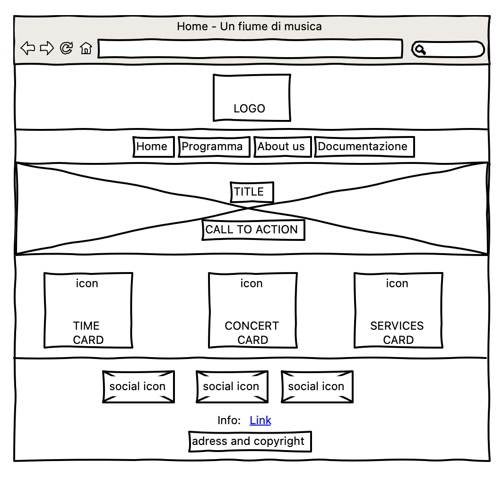
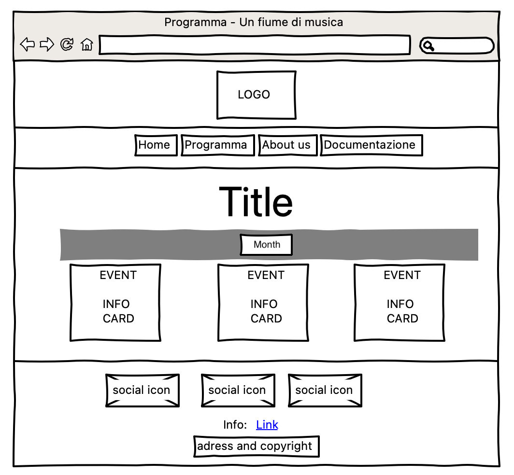
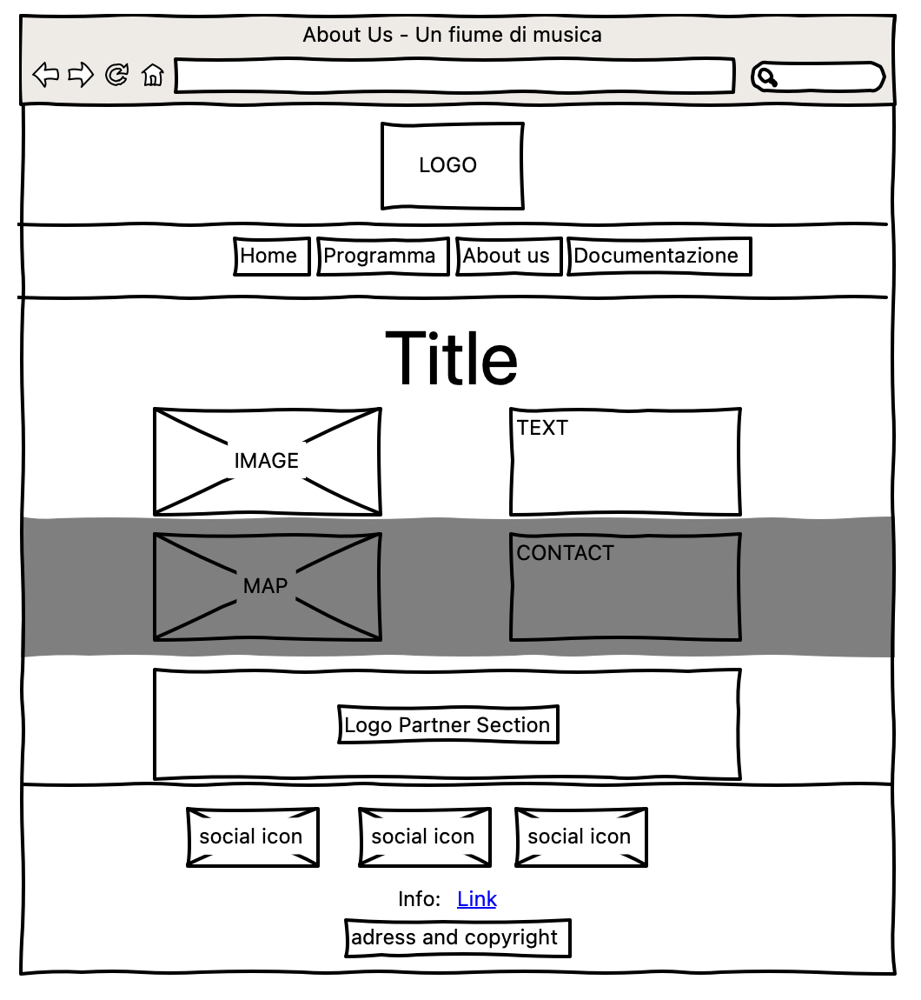
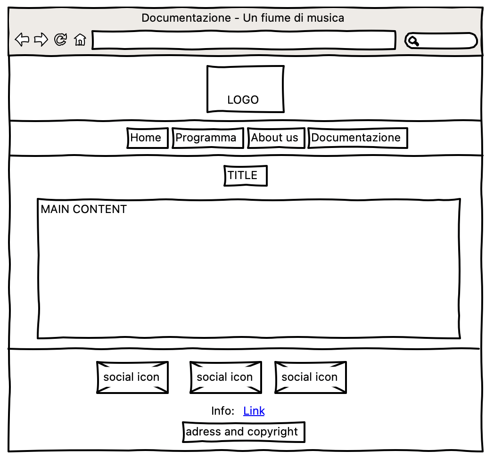

Questo progetto prevede lo sviluppo di un sito web per la manifestazione "Un fiume di musica" nato con l'obiettivo di fornire un punto di riferimento unico e indipendente per accedere a tutte le informazioni sulla programmazione dell'evento. Questo sito web raccoglie in un unico luogo le informazioni relative agli artisti, alle date e ai servizi delle esibizioni, in modo da rendere facile e immediato l'accesso alle informazioni per tutti coloro che vogliono partecipare. L’obiettivo è di raggiungere tramite web un pubblico di over 30 esterno all’associazione musicisti di Ferrara - APS che ne è organizzatore e promotore.
1. Obiettivi: Il sito web "Un fiume di musica" mira ad essere una vetrina completa e ordinata di tutti gli eventi e servizi offerti dalla manifestazione con attenzione rivolta all'obiettivo di solidarietà proposto per quest'edizione.
2. Target utente: Il target principale sono gli appassionati di musica over 30.
3. Competitors:
Ferrara Buskers Festival: Il sito web di Ferrara Buskers Festival è ben strutturato e accattivante. La homepage presenta un'immagine di sfondo che richiama l'atmosfera del festival e un menù principale che permette di accedere a tutte le sezioni del sito, interessante la call-to-action per iscriversi alla newsletter e decisamente apprezzato il collegamento Spotify ad una playlist che contiene i brani dei partecipanti al festival. Sono presenti informazioni dettagliate sulla storia del festival, sul programma, sulle location e sui musicisti partecipanti. È possibile acquistare merchandising online e consultare le news e le foto delle edizioni passate. Il sito presenta anche una sezione dedicata agli sponsor e ai media partner. Inoltre, è presente una sezione "Buskers for Future" che illustra le iniziative dell'organizzazione per la tutela dell’ambiente.
Ferrara Summer Festival: Il sito web di Ferrara Summer Festival è molto animato, ma la struttura potrebbe essere migliorata. La homepage presenta un menù principale che permette di accedere alle diverse sezioni del sito, ma le informazioni sono sparse e poco organizzate. Sono presenti informazioni sul programma e la possibilità di acquistare biglietti dei concerti, dettagli sugli artisti partecipanti e sui luoghi del festival oltre a pacchetti per incentivare il turismo. Non ci sono informazioni sulla storia del festival né iniziative dell'organizzazione per la tutela dell'ambiente o per la responsabilità sociale. La musica non sembra avere un ruolo centrale all'interno del sito che appare più come un contenitore di servizi che un sito dedicato al festival.
a. Architettura del sito:
b. Wireframe:
Home:
Programma:
About us:
Documentazione:
Look and Feel:
Il font utilizzato è Inter scelto per la semplicità e la pulizia.
La palette colori richiama lo stile comunicativo della manifestazione attraverso il blu hex:#2C5C98 e l'arancione per richiamare i colori dell'associazione organizzatrice.
Linguaggi: HTML, CSS e JavaScript.
Strumenti: Bootstrap per la grafica responsive;
Font Awesome per le icone;
Github per la pubblicazione;
Google font per le font;
WireframeSketcher per i wireframe;
Google Analytics per il monitoraggio.
Dall'analisi dei competitors emerge che entrambi i siti web sono funzionali per soddisfare le richieste di un pubblico alla ricerca di informazioni sulle manifestazioni musicali ma si concentrano maggiormente su un pubblico generalista trascurando l'importanza culturale dell'evento per la città.
Il sito web di "Un fiume di musica" invece pone l'accento sull'importanza culturale dell'evento mettendo in risalto tutti i protagonisti e pondendo l'attenzione all'obiettivo di solidarietà proposto per quest'edizione dell'evento. Due sono le carenze del sito web attualemente che riguardano la mancanza di una sezione sul progetto di rigenerazione urbana della darsena di San Paolo entro cui la manifestazione è inserita e l'importanza data agli aspetti di sostenibilità ambientale. Entrambi gli aspetti sono in progetto.
Almeno 30 like al post promozionale di Instagram;
Almeno 100 visualizzazioni del sito web da utenti unici.
La rassegna mira principalmente al target over 30 che condivide un interesse comune e variegato per la musica. Questo target è raggiungibile facilmente online attraverso le piattaforme social frequentate dalle diverse fasce d’eta ma anche attraverso giornali e servizi televisivi. Vista l’ampiezza del target è bene avere un'informazione riconoscibile e personalizzata ma semplice e chiara.
Messaggio:
Alcune persone potrebbero non essere a conoscenza della rassegna di concerti o potrebbero non essere interessate alla musica dal vivo. Il sito web ha lo scopo di promuovere la bellezza e l'importanza di queste manifezioni sul piano culturale e ambientale ma anche dal ruolo nei progetti di rigenerazione urbana e di promozione sociale oltre che ovviamente divulgare l'attività dell'associazione musicisti di Ferrara - APS.
La promozione del sito web è stata principalmente eseguita sulle pagine Instagram e telegram dell’evento e dell’organizzatore.
Su instagram i risultati attesi sono stati raggiunti, non è possibile estrapolare dati anagrafici dal social ma il target è stato ampiamente raggiunto. Raggiunto anche l'obiettivo di visualizzazioni del sito web da parte di utenti unici.
Google Analitics: